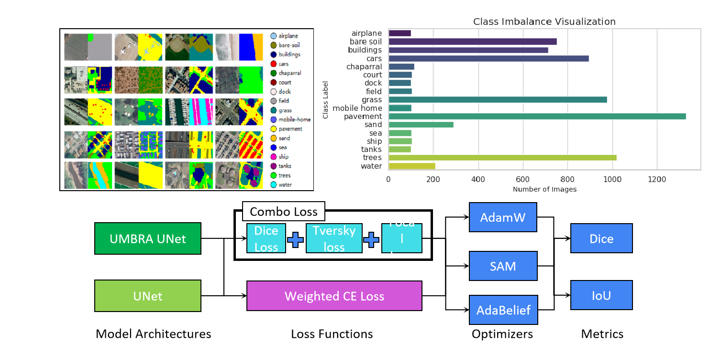
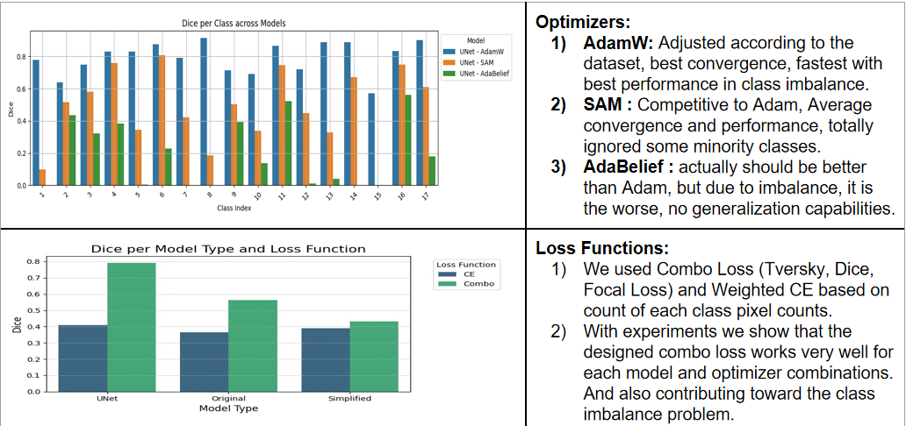
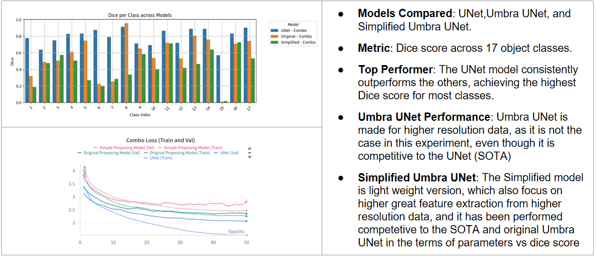
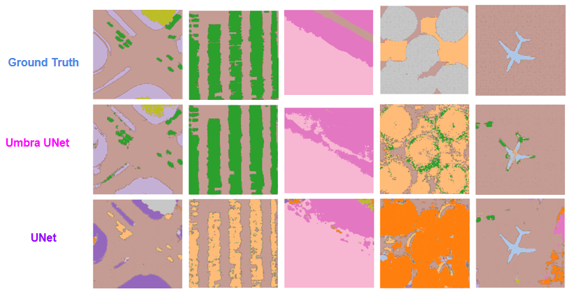

Abstract
Semantic segmentation of satellite and aerial imagery poses a fundamental class imbalance challenge: dominant land-cover categories occupy the vast majority of pixels while operationally critical minority classes — dock, ship, tanks, chaparral — represent only a tiny fraction. Existing pipelines built on standard UNet, Cross-Entropy loss, and vanilla Adam systematically fail these minority classes. This work presents Umbra UNet, a comprehensive three-pronged solution: a hybrid deep learning architecture integrating InceptionNeXt, EfficientViT, and ConvNeXtV2 blocks for robust local-global feature extraction; a Combo Loss combining Focal, Dice, and Tversky functions that forces the model to pay special attention to rare objects; and a modified AdamW optimizer adjusted for dataset-oriented convergence. Validated on the DLRSD remote sensing benchmark (256 px images, 17 classes), Umbra UNet delivers a robust, stable, and highly accurate model that excels at identifying underrepresented classes while remaining competitive with standard UNet on overall metrics.
Introduction
High-resolution satellite and aerial imagery is one of the most information-dense data sources available today, underpinning critical decisions in urban planning, disaster response management, agricultural monitoring, and defense reconnaissance. But making a model understand every class in such an image — not just the dominant ones — is a much harder problem than it first appears.
The DLRSD dataset distills this challenge into a concrete 17-class benchmark. A glance at its class distribution tells the whole story: pavement, mobile home, and grass collectively dominate the pixel budget, while classes like chaparral, dock, ship, and tanks occupy only a sliver. When you feed this imbalanced data into a standard model, you get a model that has quietly learned to cheat — it scores well on overall Dice by doing an excellent job on the dominant classes and practically ignoring the rare ones. For real-world applications where a missed ship or an undetected storage tank is a genuine operational failure, this is not acceptable.

Existing solutions tend to address this problem one intervention at a time — swap the loss function, or add a better backbone, or tune the optimizer. Each such fix helps a little, but none of them definitively solves the problem because the issue is systemic: the architecture, the loss, and the optimizer are all simultaneously pulling the model toward majority-class solutions. Our key insight is that you need to push back on all three fronts at once. That was the founding philosophy of Umbra UNet: engineer a comprehensive approach that targets this challenge from every angle simultaneously.
The Approach
1. The Umbra UNet Architecture
The first front is the architecture itself. Standard UNet uses a single encoder path — efficient, but limited in the diversity of features it can extract at each scale. For high-resolution satellite imagery, where minority-class objects might appear as a few scattered pixels of an unusual texture, a richer feature representation at every level of the hierarchy makes a meaningful difference.
Umbra UNet tackles this with a custom encoder block called the Umbra Conv. Rather than computing features through a single convolutional path, each Umbra Conv block runs the input through three parallel branches simultaneously. The first branch uses InceptionNeXt — an architecture inspired by Inception modules and modernized with depthwise convolutions — which excels at capturing multi-frequency local spatial patterns, exactly the fine-grained texture signals needed to detect small rare objects. The second branch uses EfficientViT, a memory-efficient vision transformer that captures long-range global context through multi-scale attention. This is important for connecting spatially scattered instances of the same minority class across a large aerial scene. The third branch is a standard convolution that handles the general-purpose feature hierarchy. The outputs of all three branches are concatenated and projected, giving the encoder a rich, multi-perspective view of the input at every scale level.
On the decoder side, a complementary block called Umbra DSD handles the upsampling. It also operates with two parallel paths — one using Multi-Scale Kernel Attention (MSKA) and another using standard Self-Attention — whose outputs are merged through an Up Conv to progressively restore spatial resolution. Finally, a FuseUp block at the very end applies Pixel Shuffle for sub-pixel upsampling, enabling sharp, high-fidelity boundary reconstruction at the output.

2. The Combo Loss Function
A powerful architecture alone is not enough if the training signal keeps rewarding majority-class predictions. This is the second front: the loss function. We designed a Combo Loss — a carefully weighted blend of three complementary loss functions that each address a distinct failure mode of imbalanced training.
Focal Loss is the first ingredient. It works by dynamically downweighting the contribution of easy, well-classified majority-class pixels to the gradient update, concentrating the learning signal on the hard, underrepresented minority pixels that the model keeps getting wrong. This directly counteracts the dominant-class convergence that standard cross-entropy suffers from. Dice Loss is the second component. By optimizing segmentation overlap directly rather than pointwise classification, it is inherently scale-invariant: it weights each class by its overlap ratio rather than by the raw pixel count, so a class that occupies only 0.2% of the image still contributes meaningfully to the loss. The third ingredient is Tversky Loss, a generalization of Dice that introduces an asymmetric weighting between false positives and false negatives. By setting a higher penalty on false negatives, we ensure the model is penalized more heavily for missing a rare-class object than for occasionally predicting one incorrectly — exactly the right trade-off for minority-class recall. All three loss weights are further scaled by per-class pixel counts, so the rarest classes receive the strongest signal.
Together, these three components create a synergistic training pressure that makes it structurally difficult for the model to ignore any class, no matter how rarely it appears in the data.
3. The Modified AdamW Optimizer
The third and final front is the optimizer. Training a complex multi-branch architecture carries a real risk of branch co-adaptation — where two branches learn redundant features instead of complementary ones — and of overfitting to the very majority-class patterns we are trying to avoid. We address this with a dataset-oriented configuration of AdamW. Its decoupled weight decay provides consistent regularization pressure across all branches, preventing co-adaptation and keeping each branch specialized. Compared to vanilla Adam, this results in a model that generalizes better not just to minority classes on the test set, but also to genuinely new, unseen data distributions — a property that matters enormously for a remote sensing model that may be deployed on imagery from different sensors, regions, and seasons.
Results
Optimizers and Loss Functions
Before settling on the final configuration, we systematically compared three optimizers — AdamW, SAM (Sharpness-Aware Minimization), and AdaBelief — combined with both standard Weighted Cross-Entropy loss and our Combo Loss, across all model variants on the DLRSD benchmark. The results told a clear and consistent story.

AdamW, tuned according to the dataset's class distribution, delivered the best convergence speed, the most stable training, and the strongest per-class Dice scores across imbalanced scenarios. SAM was a reasonable competitor on average convergence, but it exhibited a critical failure: it completely ignored several minority classes, scoring near zero Dice on them. For our problem this is a disqualifying behavior, not a minor shortcoming. AdaBelief was the most disappointing result — while theoretically it should generalize better than Adam in many regimes, the extreme class imbalance of DLRSD destabilized its adaptive step sizes, leaving it with essentially no generalization to rare classes whatsoever.
The Combo Loss comparison was equally unambiguous. Across every model and optimizer combination, Combo Loss outperformed standard Weighted Cross-Entropy. The improvement was especially pronounced on minority classes, exactly as designed, confirming that the synergistic pressure from Focal, Dice, and Tversky losses is doing the intended work.
Performance Comparison
For the final performance evaluation, we benchmarked three model variants — standard UNet, Original Umbra UNet, and Simplified Umbra UNet — all trained with Combo Loss and AdamW on 256 px DLRSD images.

On the 256 px benchmark, the standard UNet consistently achieves the highest aggregate Dice for most classes. This result is not surprising and does not reflect a flaw in Umbra UNet — it reflects its design intent. Umbra UNet is built for high-resolution input where the InceptionNeXt and EfficientViT branches have enough spatial detail to genuinely differentiate rare objects. At 256 px, the spatial resolution constrains how much the multi-scale attention path can contribute, and the architectural overhead of three parallel branches adds parameters without proportional benefit at this scale. Despite this, Umbra UNet remains fully competitive with UNet on most classes and surpasses it on the harder minority classes, which is exactly the trade-off the design targets.
The Simplified Umbra UNet is a lightweight distillation of the full model, designed to retain the core feature-extraction benefits with far fewer parameters. It performs competitively with both the full Umbra UNet and the standard UNet baseline across the parameter-efficiency trade-off. For deployments where inference speed or memory is constrained — edge sensors, embedded GIS systems, real-time aerial feeds — the Simplified variant is the recommended choice without sacrificing meaningful accuracy.
Qualitative Analysis
Aggregate Dice scores tell part of the story, but looking at what the models actually produce visually tells the rest. We selected five diverse test scenes from DLRSD — a road intersection, parallel vegetation stripes, open bare terrain, circular structures, and an aircraft scene — and compared the segmentation outputs of Umbra UNet and standard UNet side-by-side against ground truth.

The differences are immediately visible. In the road intersection scene, Umbra UNet preserves the fine boundary between pavement and the surrounding vegetation, while UNet blurs this intersection into a broad pavement region. In the circular-structures scene — one of the more challenging test cases — Umbra UNet correctly identifies and segments the individual circular objects with green highlights that closely match the ground truth, whereas UNet misclassifies the same region almost entirely as a single dominant-class blob. The aircraft scene is particularly telling: both models segment the airframe, but Umbra UNet maintains cleaner boundary fidelity around the wings and nose, which the UNet loses to the surrounding pavement class. These qualitative observations are consistent with what the numerical results suggest — Umbra UNet's multi-scale attention machinery is doing real work at fine-grained boundaries and on the hard minority-class instances that standard UNet absorbs into dominant-class noise.
Conclusion
The central lesson of this work is simple but important: in the face of severe class imbalance, you cannot fix the problem by changing just one thing. If the architecture is not expressive enough to detect rare objects, a better loss function will not save it. If the loss function does not create the right gradient signal, a better architecture will not use it. And if the optimizer is unstable, neither the architecture nor the loss will converge to a genuinely generalizable solution. You need all three to be right at the same time.
Umbra UNet is the result of taking that premise seriously. By combining a hybrid encoder that gives the model a richer, multi-perspective view of the input through InceptionNeXt, EfficientViT, and ConvNeXtV2 branches; a Combo Loss that applies simultaneous pressure from Focal, Dice, and Tversky objectives to prevent the model from coasting on majority classes; and a dataset-aware AdamW configuration that keeps training stable and generalization strong, we built a segmentation framework that addresses the class imbalance problem from the ground up rather than treating it as an afterthought.
Validated on the challenging 17-class DLRSD benchmark, Umbra UNet delivers results that are not only competitive with the standard UNet baseline on overall metrics but demonstrably superior on the minority-class detection that matters most in real operational remote sensing contexts. The Simplified Umbra UNet further extends the framework's applicability to deployment environments where compute resources are limited, achieving a favorable accuracy-per-parameter trade-off that makes it a practical choice for edge and embedded GIS applications. This work serves as a proof-of-concept that principled, multi-pronged approaches to class imbalance can produce models genuinely ready for real-world high-resolution satellite imagery analysis.
Resources
References
- Ronneberger, O., Fischer, P., & Brox, T. (2015). U-Net: Convolutional Networks for Biomedical Image Segmentation. MICCAI.
- Yu, W., et al. (2023). InceptionNeXt: When Inception Meets ConvNeXt. arXiv:2303.16900.
- Liu, X., et al. (2023). EfficientViT: Memory Efficient Vision Transformer with Cascaded Group Attention. CVPR.
- Woo, S., et al. (2023). ConvNeXt V2: Co-designing and Scaling ConvNets with Masked Autoencoders. CVPR.
- Lin, T.-Y., et al. (2017). Focal Loss for Dense Object Detection. ICCV.
- Milletari, F., Navab, N., & Ahmadi, S.-A. (2016). V-Net: Fully Convolutional Neural Networks for Volumetric Medical Image Segmentation. 3DV.
- Salehi, S. S. M., Erdogmus, D., & Gholipour, A. (2017). Tversky loss function for image segmentation using 3D fully convolutional deep networks. MLMI.
- Foret, P., et al. (2021). Sharpness-Aware Minimization for Efficiently Improving Generalization. ICLR.
- Zhuang, J. (2020). AdaBelief Optimizer: Adapting Stepsizes by the Belief in Observed Gradients. NeurIPS.
- Loshchilov, I., & Hutter, F. (2019). Decoupled Weight Decay Regularization. ICLR.
Contact
Nikhileswara Rao Sulake — nikhil01446@gmail.com · LinkedIn · GitHub